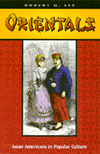

|
|
Countervisions
Asian American Film Criticism
Hamamoto,
Darrell Y., and Sandra Liu, eds.
Asian American film makers and film critics discuss their cultural
output
317 pp • 7x10 • Spring 2000
paper 1-56639-776-6
EAN 978-1-56639-776-6
cloth 1-56639-775-8
EAN 978-1-56639-775-9 |
| 
|
Critical
Race Theory
The Cutting Edge
Delgado,
Richard and Jean Stefancic, eds.
A powerful collection of original essays on the history of Critical
Race Theory
Second Edition
704 pp • 7x10 • Spring 2000
paper 1-56639-776-6
EAN 978-1-56639-776-6
cloth 1-56639-775-8
EAN 978-1-56639-775-9 |
|
|
Cultural
Compass
Ethnographic Explorations of Asian America
Manalansan,
IV, Martin F., ed.
Essays by ethnographers researching their own ethnic groups
272 pp • 7x10 • Spring 2000
paper 1-56639-773-1
EAN 978-1-56639-773-5
cloth 1-56639-772-3
EAN 978-1-56639-772-8
|
|
|
East
Indian Music in the West Indies
Tân-Singing, Chutney, and the Making of Indo-Caribbean Culture
Manuel,
Peter
An introduction to the music of Indo-Caribbean culture
Includes a CD
288 pp • 7x10 • Spring 2000
paper 1-56639-763-4
EAN 978-1-56639-763-6
cloth 1-56639-762-6
EAN 978-1-56639-762-9
|
|
|
Environmental
Ethics and Forestry
A Reader
List,
Peter, ed.
An exploration of the philosophical nature of ecology
416 pp • 7x10 • Spring 2000
paper 1-56639-785-5
EAN 978-1-56639-785-8
cloth 1-56639-784-7
EAN 978-1-56639-784-1
|
|
|
Fela
The Life and Times of an African Musical Icon
Veal,
Michael E.
A profile of the outspoken Nigerian musician who popularized
Afropop
352 pp • 7x10 • Spring 2000
paper 1-56639-765-0
EAN 978-1-56639-765-0
cloth 1-56639-764-2
EAN 978-1-56639-764-3
|
|
|
A
Genealogy of Queer Theory
Turner,
William B.
An accessible history of queer—not gay/lesbian—theory
and its academic importance
256 pp • 6x9 • Spring 2000
paper 1-56639-787-1
EAN 978-1-56639-787-2
cloth 1-56639-786-3
EAN 978-1-56639-786-5
|
|
|
Hard-Boiled
Working-Class Readers and Pulp Magazines
Smith,
Erin A.
An examination of the culture that produced and supported pulp-fiction
248 pp • 6x9 • Spring 2000
paper 1-56639-769-3
EAN 978-1-56639-769-8
cloth 1-56639-768-5
EAN 978-1-56639-768-1
|
|
|
In
Griot Time
An American Guitarist in Mali
Eyre,
Banning
An American guitarist chronicles the lives of musicians in Mali
280 pp • 6x9 • Spring 2000
paper 1-56639-759-6
EAN 978-1-56639-759-9
cloth 1-56639-758-8
EAN 978-1-56639-758-2
|
| 
|
How
I Got Over
Clara Ward and the World-Famous Ward Singers
Ward-Royster,
Willa, as told to Toni Rose
The telling story of one of the country's best-known gospel groups
New in Paperback!
263 pp • 6x9 • Spring 1997
paper 1-56639-490-2
EAN 978-1-56639-490-1
|
|
|
Images
of Animals
Anthropomorphism and Animal Mind
Crist,
Eileen
The telling story of one of the country's best-known gospel groups
New in Paperback!
256 pp • 6x9 • Fall 1998
paper 1-56639-788-X
EAN 978-1-56639-788-9
|
| 
|
Journeys
of Women in Science and Engineering
No Universal Constants
Ambrose,
Susan A., Kristin L. Dunkle, Barbara B. Lazarus, Indira Nair, and
Deborah A. Harkus
An American guitarist chronicles the lives of musicians in Mali
New in Paperback!
512 pp • 7x10 • Spring 1997
paper 1-56639-759-6
EAN 978-1-56639-759-9
|
|
|
The
Kennedy Family and the Story of Mental Retardation
Shorter,
Edward
An account of mental retardation through the eyes of the Kennedy
Family
249 pp • 6x9 • Spring 2000
paper 1-56639-783-9
paper 1-56639-783-9
cloth 1-56639-782-0
EAN 978-1-56639-782-7
|
|
|
La
Raza Unida Party
A Chicano Challenge to the U.S. Two-Party Dictatorship
Navarro,
Armando
A comprehensive study of an ethnic political movement
384 pp • 7x10 • Spring 2000
paper 1-56639-771-5
EAN 978-1-56639-771-1
cloth 1-56639-770-7
EAN 978-1-56639-770-4
|
|
|
Language
Policy and Identity Politics in the United States
Schmidt,
Sr., Ronald
An engaging discussion about the use of English and other languages
in the United States
296 pp • 6x9 • Spring 2000
paper 1-56639-755-3
EAN 978-1-56639-755-1
cloth 1-56639-754-5
EAN 978-1-56639-754-4
|
|
|
Letters
of Charles Demuth, American Artist, 1883-1935
Kellner,
Bruce, ed.
The correspondence of a celebrated 1920s artist with his famous
contemporaries
216 pp • 5.5x8.25 • Spring 2000
paper 1-56639-781-2
EAN 978-1-56639-781-0
cloth 1-56639-780-4
EAN 978-1-56639-780-3
|
|
|
Locating
Filipino Americans
Ethnicity and the Cultural Politics of Space
Bonus,
Rick
Defining ethnic identity and social space for Filipino Americans
248 pp • 6x9 • Spring 2000
paper 1-56639-779-0
EAN 978-1-56639-779-7
cloth 1-56639-778-2
EAN 978-1-56639-778-0
|
|
|
The
Money Pitch
Baseball Free Agency and Salary Arbitration
Abrams,
Roger I.
An insider's guide to the economics of Baseball
240 pp • 6x9 • Spring 2000
cloth 1-56639-774-X
EAN 978-1-56639-774-2
|
| 
|
Orientals
Asian Americans in Popular Culture
Lee,
Robert G.
A compelling study of how the label "oriental" came
into being
New in Paperback!
288 pp • 6x9 • Fall 1998
paper 1-56639-753-7
EAN 978-1-56639-753-7
|
| 
|
Pacifica
Radio
The Rise of an Alternative Network
Lasar,
Matthew
A profile of America's first listener-supported alternative radio
station
Updated Edition
New in Paperback!
320 pp • 6x9 • Fall 1998
paper 1-56639-777-4
EAN 978-1-56639-777-3
|
|
|
Paradise,
New York
A Novel
Pollack,
Eileen
A funny and moving first novel of nostalgia for Catskills hotel
life
New in Paperback!
288 pp • 5x9 • Fall 1998
paper 1-56639-789-8
EAN 978-1-56639-789-6
|
|
|
Presenting
Women Philosophers
Tougas,
Cecile T., and Sara Ebenreck, eds.
Women's unique outlook on life reveals itself in philosophical
thought throughout the ages
280 pp • 7x10 • Spring 2000
paper 1-56639-761-8
EAN 978-1-56639-761-2
cloth 1-56639-760-X
EAN 978-1-56639-760-5
|
| 
|
The
Red Atlantis
Communist Culture in the Absence of Communism
Hoberman,
J.
A delightful and witty examination of Communism as an art form
New in Paperback!
326 pp • 5x9 • Fall 1998
paper 1-56639-767-7
EAN 978-1-56639-767-4
|
| 
|
Robert
Kennedy
Brother Protector
Hilty,
James W.
The relationship between a President and his 'tough as nails'
alter ego and brother
New in Paperback!
672 pp • 6x9 • Fall 1997
paper 1-56639-766-9
EAN 978-1-56639-766-7
|
|
|
Voices
of the Religious Left
A Contemporary Sourcebook
Alpert,
Rebecca T., ed.
A collection of essays that demonstrate the vitality of current
liberal religious thought
304 pp • 7x10 • Spring 2000
paper 1-56639-757-X
EAN 978-1-56639-757-5
cloth 1-56639-756-1
EAN 978-1-56639-756-8
|
| 
|
The
Whiz Kids and the 1950 Pennant
Roberts,
Robin and C. Paul Rogers III
The story of the astounding Whiz Kids told by Hall-of-Famer Robin
Roberts
New in Paperback!
390 pp • 6x9 • Spring 1996
paper 1-56639-790-1
EAN 978-1-56639-790-2
|